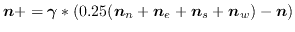
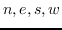

This operator implements migration within cellular Eco Lab. This updates density values according to the difference with the 4 nearest neighbours: , where the  index the north, east, south and west neigbouring cells.